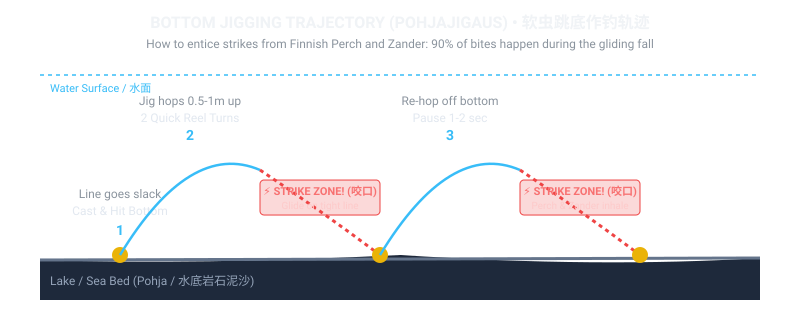
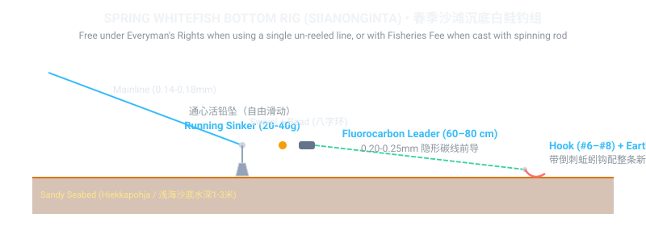

🎯 1. Jigging & Soft Plastics (Jigaus) — Trajectory & Mechanics
Jigging with silicone soft baits mounted on tungsten or lead jigheads is by far the most productive summer and autumn method for perch and zander in Finland. To master it, understand how the lure moves along the seabed:

🏖️ 2. Spring Bottom Angling for Whitefish (Siianonginta)
Immediately after coastal sea ice melts in April and May, anglers head to sandy beaches in Helsinki, Espoo, and Porkkalanniemi. Study the exact terminal rig and action below:

🌉 3. Baltic Herring Sabiki Jigging (Silakanlitkaus)
In May–June and October, immense shoals of Baltic herring enter the inner archipelago channels. Using a specialized 6-to-8 hook bare gold rig (silakanlitka) with a 35g sinker, you jig vertically from bridges.
❄️ 4. Winter Ice Fishing (Pilkintä) & Safety Protocol
From December to April, Finnish waters freeze solid. Learn how to drill clean holes, work balance jigs and mormyshkas, and wear safety picks.